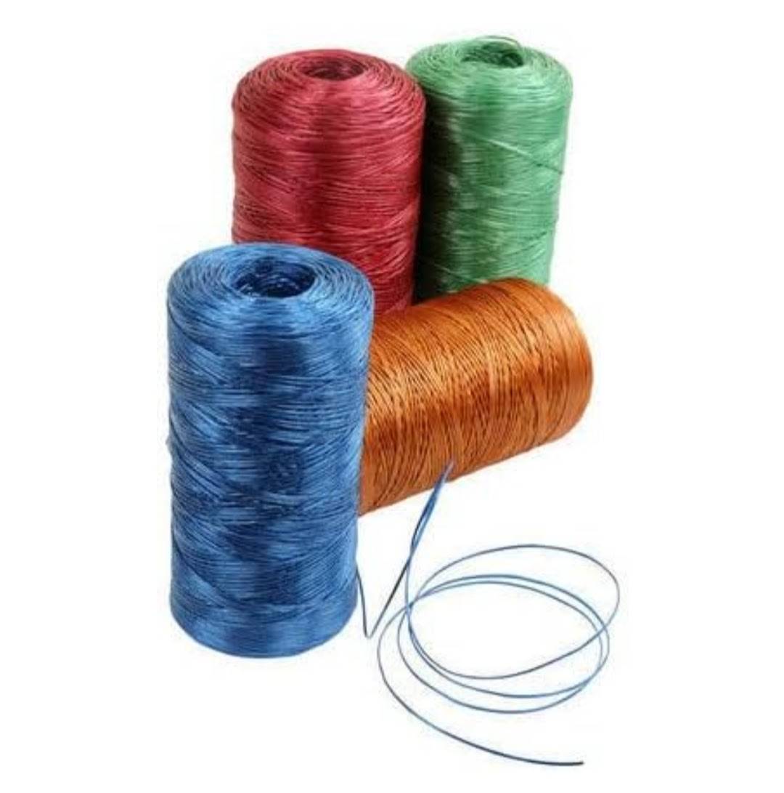
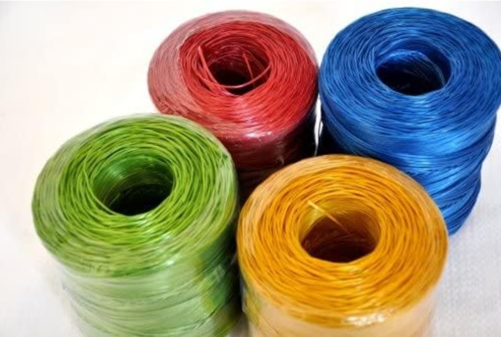
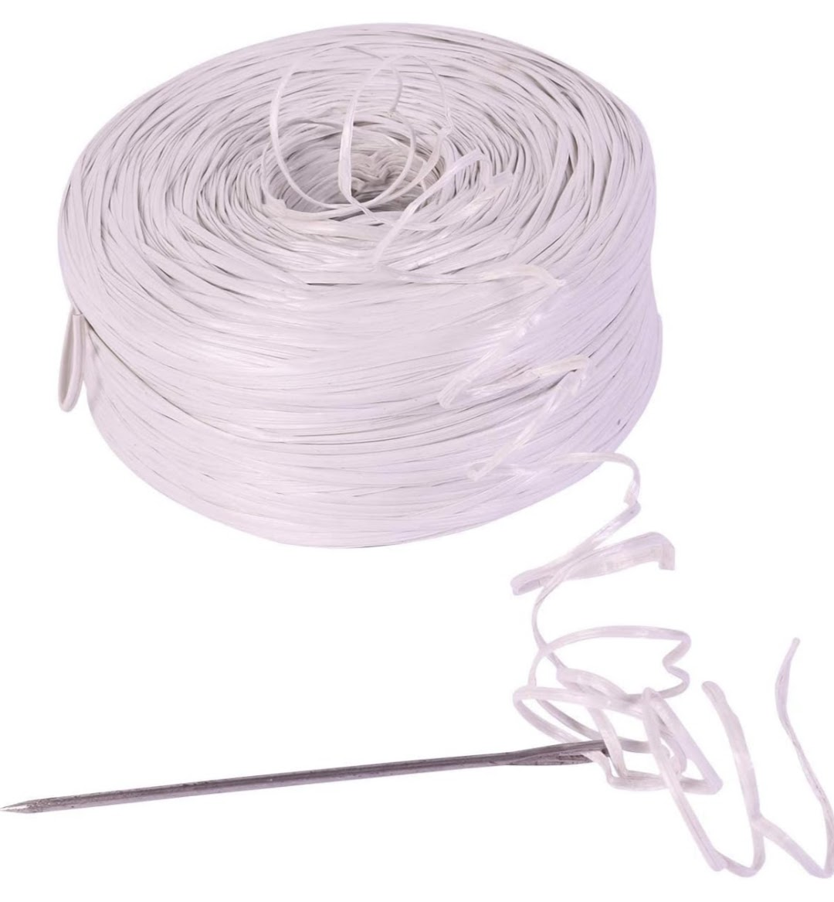
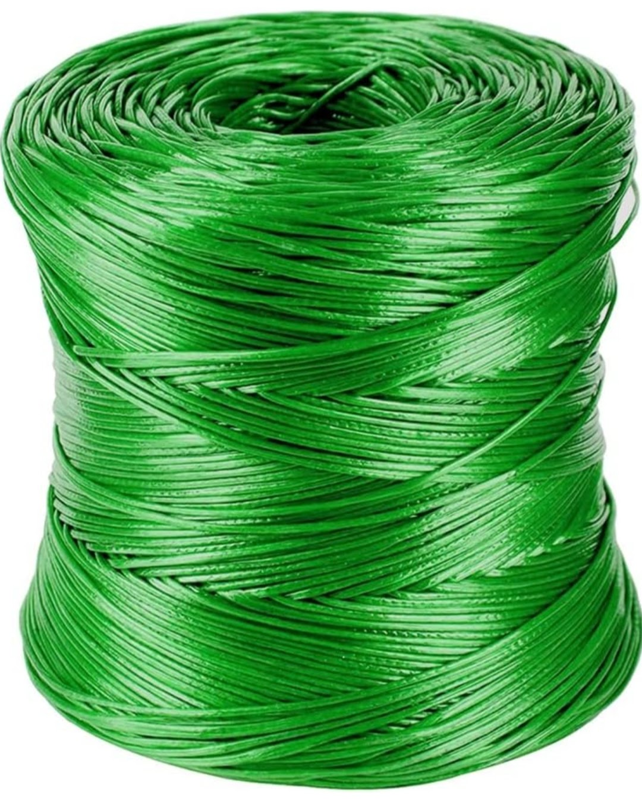

Product Overview
Sutli, also known as PP Twine, is a synthetic tying material
manufactured from polypropylene fibers and widely used
for daily bundling and packaging needs.
It offers a good balance of strength, flexibility, and
affordability, making it a popular alternative to jute
and cotton twines in commercial and agricultural sectors.
Key Features
- Lightweight and easy to handle
- Good tensile strength for daily use
- Resistant to moisture and rot
- Cost-effective and long-lasting
- Uniform thickness and smooth finish
Specifications
- Material: Polypropylene (PP)
- Form: Twine / Sutli roll
- Thickness: Multiple ply options available
- Colour: White, Blue, Yellow (varies)
- Usage: Tying, bundling, and packaging
Applications & Use Cases
- Packaging and carton tying
- Agricultural bundling and crop tying
- Warehouse and shop usage
- Paper, newspaper, and material bundling
- General household and industrial use
Best Suited For
- Packaging units and warehouses
- Agricultural users and farmers
- Retail shops and wholesalers
- Factories requiring daily tying material
Selection Note
For Indian operating conditions, sutli ply and thickness
should be selected based on load weight and tying frequency.
Higher ply twines are recommended for heavier bundles and
repeated use, while standard ply is suitable for light-duty
packaging and household applications.
Commonly Used Along With
- Corrugated Boxes and Cartons
- Stretch Film and Packing Tapes
- Manual Strapping and Packaging Tools
Product FAQs
-
What is PP sutli commonly used for?
PP sutli is commonly used for packaging, bundling cartons,
agricultural tying, warehouse operations, and general
daily tying requirements.
-
Is PP sutli better than jute sutli?
PP sutli is more resistant to moisture, does not rot,
and offers more consistent strength compared to jute,
making it suitable for longer storage and outdoor use.
-
Can sutli be used in agricultural applications?
Yes. PP sutli is widely used in agriculture for crop
bundling and tying due to its lightweight nature and
resistance to moisture.
-
How do I choose the correct ply or thickness?
Ply selection depends on load weight and usage frequency.
Heavier bundles require higher ply sutli for added strength.
-
Is PP sutli suitable for outdoor use?
Yes. PP sutli is resistant to moisture and mildew, making
it suitable for outdoor and semi-outdoor applications.
-
Are bulk rolls available?
Yes. Sutli is available in bulk rolls and custom packing
options for commercial, agricultural, and industrial buyers.